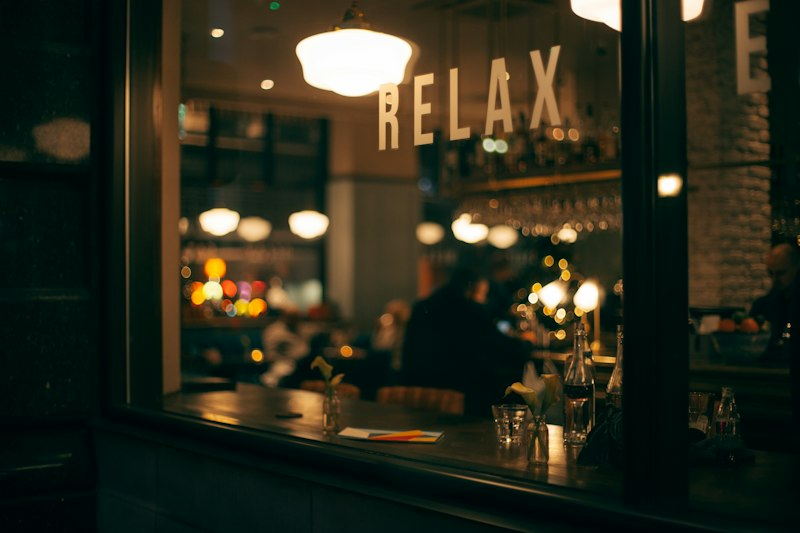
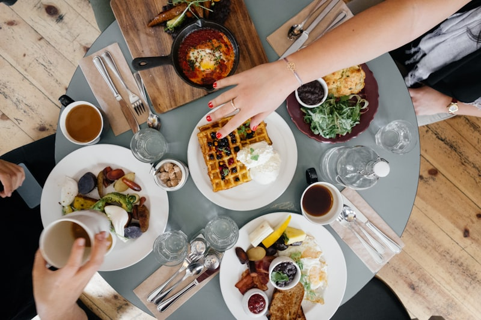
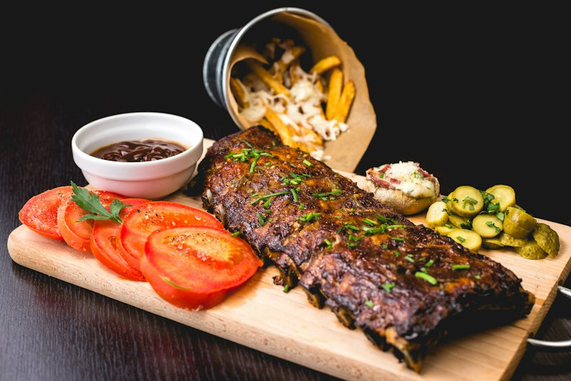
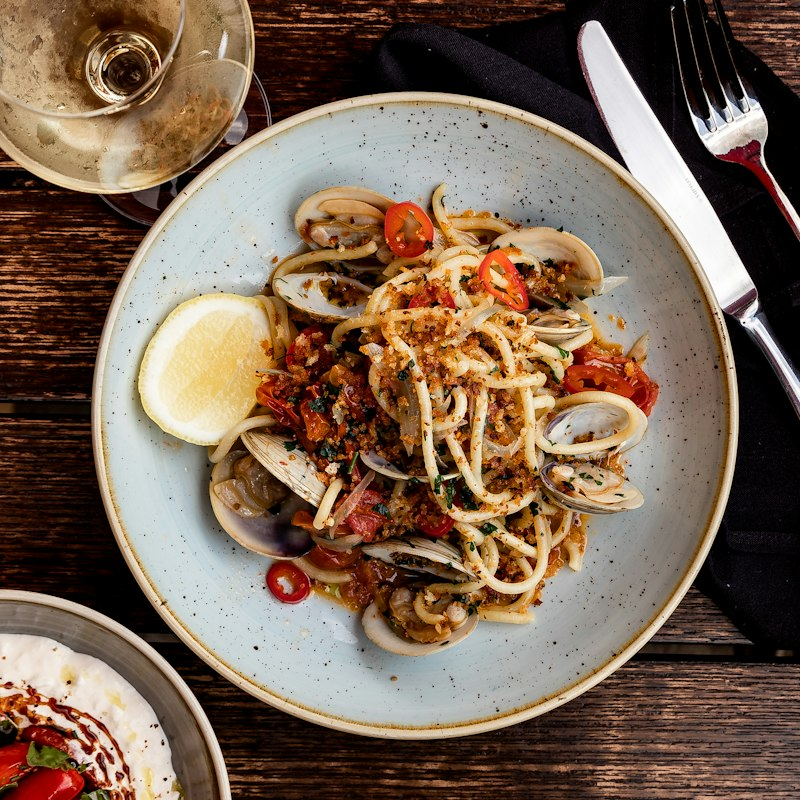
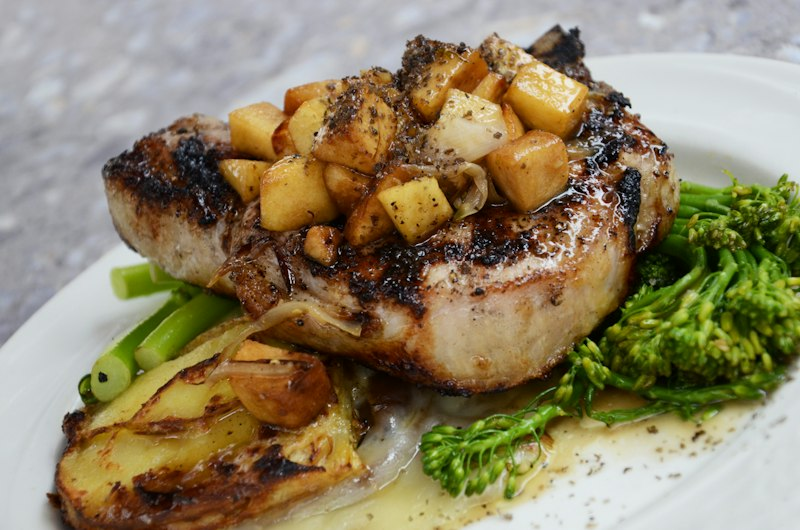
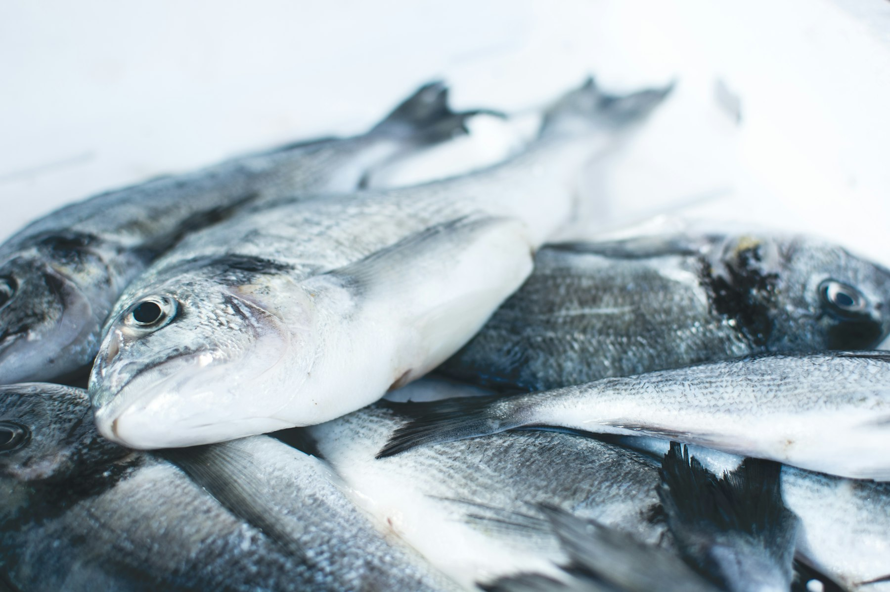
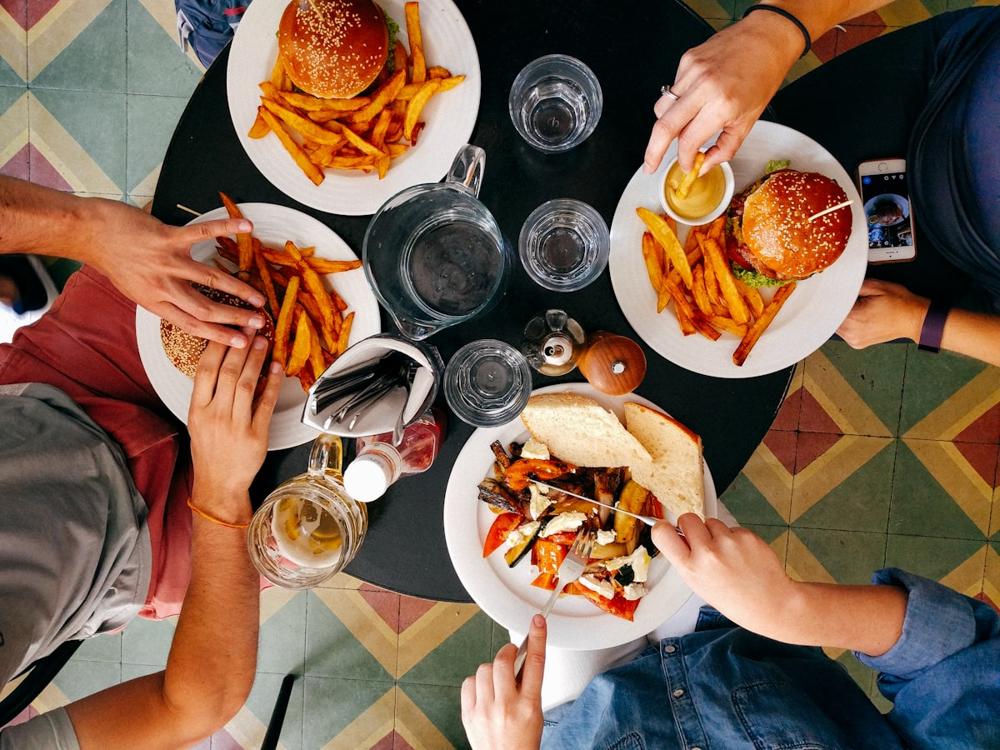

Galleria
Un Assaggio dell'Atmosfera
Immagini dimostrative: da sostituire con fotografie reali del locale, dei piatti e del cortile di Corte Campana.







Dal centro storico di Lucca
Cucina toscana autentica, porzioni generose e l'accoglienza di una famiglia, in un cortile medievale a due passi da Piazza San Michele.

La Storia
Nascosta in Corte Campana, tra Piazza Napoleone e Piazza San Michele, l'Osteria da Rosolo è uno di quei posti che a Lucca si tramandano sottovoce: un cortile medievale, tavoli semplici e una cucina che non ha bisogno di apparire perché parla da sola.
La gestione è familiare — la sala e la cucina si dividono tra marito e moglie, con quella cura artigiana che si sente in ogni piatto: paste tirate come una volta, ragù che cuociono per ore, ricette lucchesi rispettate alla lettera. Niente fronzoli, niente scorciatoie: solo la tavola toscana raccontata con onestà.
Non si accettano prenotazioni: chi arriva fa un po' di fila, ma — dicono i clienti — ne vale sempre la pena.
Galleria
Immagini dimostrative: da sostituire con fotografie reali del locale, dei piatti e del cortile di Corte Campana.





Recensioni
"Le pappardelle al cinghiale sono tra le migliori mangiate in Toscana. Un posto nascosto in un cortile, ma vale ogni minuto di attesa."
— dalle recensioni Tripadvisor"Gestione familiare, accoglienza calorosa e porzioni abbondanti. I tordelli lucchesi sono fatti come una volta."
— dalle recensioni Google"Facile da non vedere dalla strada, ma chi lo trova capisce subito perché è uno dei ristoranti più amati del centro di Lucca."
— dalle recensioni online4.6 / 5 — oltre 100 recensioni su Tripadvisor, tra i ristoranti più apprezzati del centro storico di Lucca.
Dove Siamo
Per gruppi numerosi o informazioni potete chiamarci direttamente. Non serve prenotare: bastano un po' di pazienza e appetito.